Rezension von „InterCorp – Ein mehrsprachiges Parallelkorpus des Tschechischen Nationalkorpus“ (Český národní korpus)
Table of Contents
Abstract
This review describes and evaluates the InterCorp, a multilingual parallel corpus with referential character, developed by the Institute of the Czech National Corpus and the Institute of Theoretical and Computer Linguistics at the Charles University (Prague). In its current version 10, which was published in 2017, it comprises 2 108 703 589 tokens of language data in 40 different languages. It is developed according to the translation-principle with Czech as its pivot language. Therefore, each integrated text is available in Czech and at least one other language. A substantial part of the corpus, the core, which comprises mostly fiction, is aligned manually in the project itself. Other parts of the corpus, the so-called collections, are integrated from other projects, where they have been aligned automatically. Besides a detailed description of the structure and content of the InterCorp, this review focuses the accessiblitiy via the online corpus manager KonText and assesses the value of the corpus for research questions that do not primarily focus Czech.
Überblick
Allgemeine Charakterisierung, Ziele und Zielgruppe
Das InterCorp ist ein mehrsprachiges, nach dem Translationsprinzip aufgebautes Parallelkorpus, das seit 2005 am Institut des tschechischen Nationalkorpus (Ústav Českého národního korpusu 1) in Kooperation mit dem Institut für theoretische und Computerlinguistik (Ústav teoretické a komputační lingvistiky 2) der Philosophischen Fakultät der Karlsuniversität (Prag) aufgebaut wird. Seit der 2013 veröffentlichten 6. Version hat es den Charakter eines Referenzkorpus – die Vorgängerversionen bleiben seitdem nach ihrem Publikationszeitpunkt jeweils unverändert und können auch nach Erscheinen der nächsten, aktualisierten Version abgerufen werden. Diese Rezension bezieht sich hauptsächlich auf die zum Rezensionszeitpunkt im März 2018 jüngste verfügbare Version, nämlich Version 10, die 2017 veröffentlicht wurde.
Das Korpus richtet sich einerseits explizit an ein wissenschaftliches, linguistisches wie translationswissenschaftliches Zielpublikum, ist andererseits jedoch durch die online, nicht nur im intuitiv aufgebauten Korpusmanager KonText,3 sondern auch durch die niederschwellige, auf dem InterCorp aufgebaute Applikation Treq 4 gegebene Verfüg- und Durchsuchbarkeit für eine breitere Öffentlichkeit nutzbar. Besonders in der praktischen Translation und im Fremdsprachenunterricht sind Anwendungsgebiete gegeben. Das InterCorp richtet sich damit explizit an menschliche NutzerInnen und versucht deren Bedürfnissen nachzukommen, womit es sich von anderen multilingualen Parallelkorpora wie Opus 5 und JRC-Acquis 6 unterscheidet, die (auch) für die maschinelle Verarbeitung aufgebaut wurden und für diese genutzt werden.
Da das Tschechische als Pivotsprache fungiert, jeder nicht-tschechischsprachige Text also ein tschechisches Gegenstück enthält und mit diesem aligniert ist, eignet sich das InterCorp primär für Fragestellungen, die sich auf das Tschechische beziehen. František Čermák – Begründer des Instituts des Tschechischen Nationalkorpus – und Alexandr Rosen beschreiben die Idee hinter dem InterCorp in diesem Sinn: „[…] having one’s own language amply covered by monolingual corpora may not be enough – the language must also be studied from the outside” (Čermák und Rosen 2012: 414). In dem Teil der Rezension, der sich mit der Struktur des Korpus beschäftigt, soll jedoch gezeigt werden, dass das InterCorp auch für andere Sprachenpaare eingesetzt werden kann und auch für diese eine wertvolle Quelle darstellt.
Institutionelle Einbettung
Der Auf- und Ausbau des InterCorp wird als Teil des Tschechischen Nationalkorpus (Český národní korpus) seit 2005 durchgängig von diversen Grants des tschechischen Ministeriums für Unterricht, Jugend und Sport (Ministerstvo školství, mládeže a tělovýchovy) finanziert. Seit 2012 findet die Förderung im Rahmen eines Programmes mit Namen Large Research, Development and Innovation Infrastructures7 statt. Ausführende Institutionen sind zwei Institute der Philosophischen Fakultät der Prager Karlsuniversität, nämlich das Institut des tschechischen Nationalkorpus (Ústav Českého národního korpusu) sowie das Institut für theoretische und Computerlinguistik (Ústav teoretické a komputační lingvistiky). Alexandr Rosen, der derzeit leitend für das InterCorp verantwortlich ist, ist institutionell dem zweiten Institut zugeordnet, Software und Technik werden durch Martin Vavřín und Adrian Zasina von ersterem Institut beigesteuert. Die inhaltliche Gestaltung – also die Auswahl und Verarbeitung der Texte – wird durch für spezifische Sprachen zuständige KoordinatorInnen,8 die primär von tschechischen Universitäten stammen, vorgenommen (vgl. auch Rosen 2016: 23).
Entwicklung und Umfang
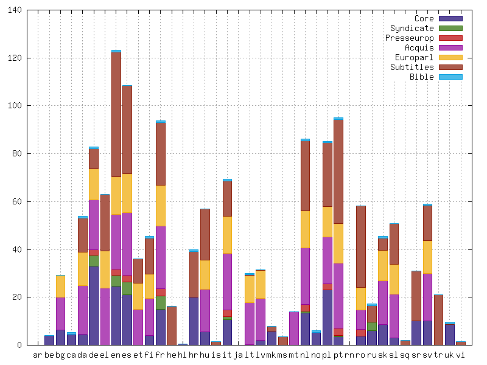
Die Größe des Korpus wird für diese Version 10 mit insgesamt 2 108 703 589 Token angegeben,10 wobei 11,5%, nämlich 245 483 234 Token auf das Tschechische entfallen. Die Größe der nicht-tschechischsprachigen Teile kann Abb. 1 entnommen werden, die zeigt, dass das InterCorp die meisten Sprachdaten für das Englische (123 172 000 Token), Spanische (108 377 000 Token) und Portugiesische (94 930 000 Token) enthält. Auf die Teilkorpora, auf die durch die Legende verwiesen wird, geht das entsprechende Kapitel dieser Besprechung ein.
Korpusaufbau
Kriterien für die Textauswahl
Das InterCorp ist, wie eingangs erwähnt, nach dem Translationsprinzip rund um die Pivotsprache Tschechisch aufgebaut, woraus als primäres Selektionskriterium zur Textauswahl folgt, dass für jeden integrierten Text eine tschechischsprachige Version verfügbar sein muss. Aus pragmatischen Gründen, die v. a. mit der Verfügbarkeit von Paralleltexten für Sprachenpaare (bestehend aus Tschechisch und einer anderen Sprache) zweier „kleiner“ Sprachen zusammenhängen, werden auch Texte für ein bestimmtes Sprachenpaar integriert, in denen keine der beiden Sprachen die Originalsprache darstellt (vgl. Čermák und Rosen 2012: 417). Tschechisch wird von den Verantwortlichen als Beispiel für eine solche „kleine“ Sprache genannt (vgl. ebd.: 414), wodurch die Virulenz dieser Problematik für den Aufbau des Korpus deutlich wird: Um eine ausreichende Korpusgröße für ein aus Tschechisch und einer anderen Sprache bestehendes Paar zu erzielen, werden Texte integriert, die in beiden dieser Sprachen Übersetzungen darstellen. In der Nutzung des InterCorp muss dieser Umstand insofern Berücksichtigung finden, als sich Originaltexte und Übersetzungstexte in einer Sprache linguistisch deutlich unterscheiden (vgl. Chlumská 2017 für das Tschechische).
Weitere zentrale Aufnahmekriterien ergeben sich aus dem Ziel, allgemeine Gegenwartssprache abzudecken, um das Korpus für ein möglichst breites Spektrum verschiedener Fragestellungen nutzbar zu machen. Daher werden nur Texte aufgenommen, die nach dem Jahr 1945 entstanden sind (vgl. Čermák und Rosen 2012: 417).
Dem Anspruch, ein möglichst balanciertes Parallelkorpus aufzubauen, gerecht zu werden, ist deutlich schwerer. Auf Grund mangelnder Übersetzungen mündlicher Äußerungen in der notwendigen Zahl werden nämlich nur geschriebene Texte aufgenommen. Der zentrale Fokus des InterCorp-Projekts selbst liegt auf fiktionalen Texten, v. a. Romanen. Nicht-fiktionale Textsorten werden jedoch durch den Rückgriff auf und die Integration von anderen Korpora und Quellen abgedeckt (vgl. ebd.).
Die Collections im InterCorp
Innerhalb InterCorp wird also grundsätzlich zwischen dem sogenannten Core und den Collections unterschieden, wobei sich diese beiden Teile durch die in ihnen enthaltenen Textsorten und darin, ob die Alignierung mit der jeweiligen tschechischen Version manuell überprüft wird, unterscheiden. Bei den Collections handelt es sich um jene größtenteils nicht-fiktionalen, aus externen Projekten integrierten Texte, die oft bereits in diesen automatisch aligniert wurden. Auf die sich aus diesem Vorgehen ergebenden Probleme, die v. a. die höhere Zahl falsch alignierter Segmente und fehlende Metadaten in den originalen Ressourcen betreffen, wird im Wiki des InterCorp – und damit für die breite Nutzerschaft gut sichtbar – explizit hingewiesen.11 Teilweise wurden die integrierten Ressourcen auch geringfügig verändert, etwa Texte getilgt, für die keine tschechische Version verfügbar war. In Version 10 sind die folgenden Collections enthalten, durch die etwa Pressesprache, aber auch der gesprochenen Sprache näherstehende Texttypen abgedeckt werden:
- politische Kommentare, publiziert von Project Syndicate 12 und VoxEurop 13 (früher: PressEurop)
- Rechtstexte der Europäsichen Union aus dem Acquis Communautaire-Korpus14
- Verhandlungen des Europäischen Parlaments aus den Jahren 2007–2011 aus dem Europarl-Korpus15
- Filmuntertitel aus der Open Subtitles database 16
- Bibelübersetzungen
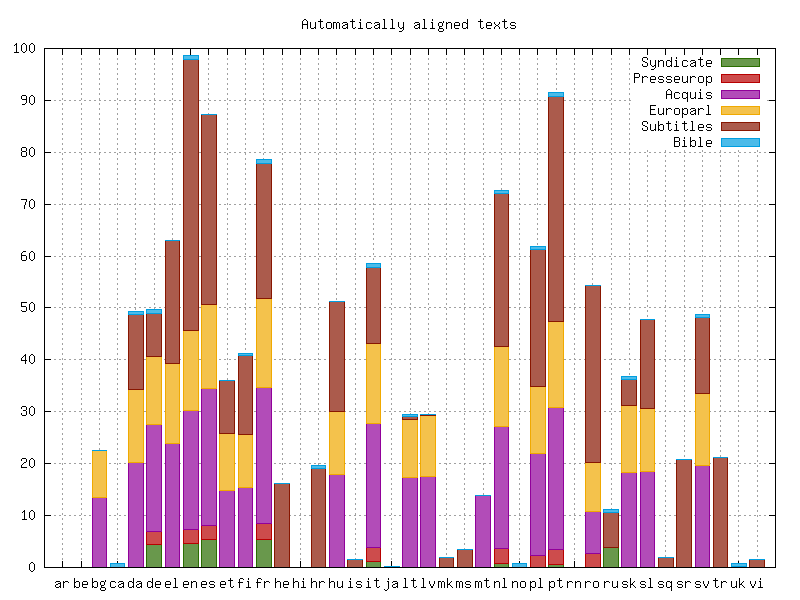
Der Core im InterCorp
Der Core ist – wie bereits sein Name suggeriert – das eigentliche Herzstück des InterCorp, das sich aus manuell alignierten und überprüften, fiktionalen Texten zusammensetzt. In der Praxis handelt es sich bei diesen Texten auf Grund ihres Tokenumfangs meist um Romane. Die in der Konzeption des Korpus ursprünglich geäußerte Annahme, dass eine „nicht-triviale Grundmenge an Titeln“18 bestünde, die in mehreren, wenn nicht allen Sprachen vorläge, hat sich nicht bestätigt, weshalb die meisten Texte nur als Bitexte für ein Sprachenpaar (Tschechisch und eine andere Sprache) verfügbar sind (vgl. Čermák und Rosen 2012: 415).
Für viele, allgemeinlinguistische und auch komparative Fragestellungen sind jedoch Paralleltexte in mehr als nur zwei Sprachen wünschenswert, wenn nicht unumgänglich. Aus diesem Grund hält das Institut des Tschechischen Nationalkorpus die für die Textaquise und Verarbeitung verantwortlichen sprachspezifischen KoordinatorInnen dazu an, bereits in anderen Sprachen vorhandene Titel bevorzugt zu inkludieren (vgl. ebd: 417). Die aktuellsten, sich auf die 2015 veröffentlichte Version 8 beziehenden Informationen zu den durch die meisten Sprachen abgedeckten Einzeltiteln sind in Rosen (2016: 26–27) zu finden. Die drei, in den meisten Sprachen vorhandenen Werke waren in dieser Version:
- J. K. Rowling: Harry Potter and the Philosopher’s Stone (26 Sprachen)
- Saint-Exupéry: Le petit prince (26 Sprachen)
- L. Carroll: Alice in Wonderland (23 Sprachen)
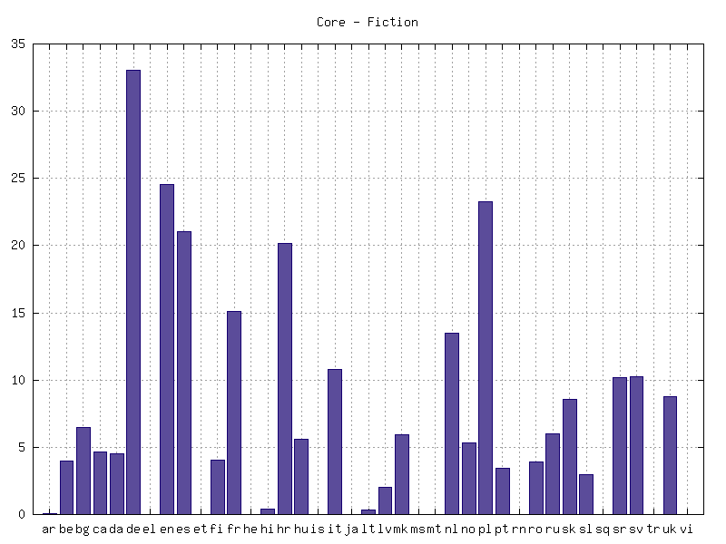
Aus Abb. 3 ist die Größe der für alle Sprachen außer Tschechisch vorhandenen Cores in der aktuellen Version 10 des InterCorp ersichtlich. Für das Deutsche sind Texte im Umfang von 33 053 000 Token, für das Englische von 24 567 000 Token vorhanden. Den dritten Rang nach Größe des Cores nimmt das Polnische mit 23 238 000 Token ein.19
Da der Korpusmanager des Tschechischen Nationalkorpus die Erstellung personalisierter Subkorpora erlaubt, können der Core und die Collections getrennt voneinander bzw. in beliebigen Kombinationen durchsucht werden, wodurch die Vor- und Nachteile der jeweiligen Teilkorpora des InterCorp spezifisch für jede (Forschungs-)Frage abgewogen und dann auch berücksichtigt werden können. Auch die Erstellung von Subkorpora anhand anderer, textspezifischer Metadaten ist möglich, wodurch z. B. auch bestimmte Romane und ihre Übersetzungen in eine oder mehrere Sprachen untersucht werden können. Auf diese Funktionen wird im Teil der Rezension, die sich mit dem Korpusmanager auseinandersetzt, näher eingegangen.
Nutzbarkeit für Einzelsprachen, Sprachenpaare ohne Tschechisch und mehr als zwei Sprachen
Der Korpusmanager ermöglicht es auch, einzelsprachliche Teile des Parallelkorpus alleine, ohne eine Vergleichssprache oder die Pivotsprache Tschechisch, zu durchsuchen. Diese Möglichkeit mag für die im InterCorp am stärksten repräsentierten anderen Sprachen als Tschechisch auf Grund vorhandener, einfach zugänglicher (National-)Korpusprojekte von untergeordneter Relevanz sein. Für manche der enthaltenen Sprachen, etwa das Ukrainische oder Mazedonische, für das nur wenige, einfach zugängliche elektronische Ressourcen vorliegen, können diese Teile des InterCorp dagegen sehr wohl eine wertvolle Quelle darstellen.
Außerdem lässt der Korpusmanager die Option offen, nicht nur aus Tschechisch und einer anderen Sprache bestehende Sprachenpaare zu durchsuchen, sondern – scheinbar – z. B. ein deutsch-ukrainisches Parallelkorpus zu erstellen. Dabei sollte immer die Struktur des Korpus und die Funktion des Tschechischen als Pivotsprache berücksichtigt werden: Die deutsche und die ukrainische Version des Textes sind in diesem nicht unmittelbar miteinander aligniert, sondern vermittelt über das Tschechische, was bei komplexen Suchanfragen und besonders, wenn die nicht manuell überprüften Collections herangezogen werden, zu einer erhöhten Wahrscheinlichkeit falsch alignierter Ergebnisse führt. Rosen (2016: 29) führt eine Tabelle an, aus der die Größe der Core-Bitexte für alle Sprachenpaare entnommen werden kann. Mit dem Deutschen bildeten etwa in der Version 8 (2015) neben dem Tschechischen (27 656 000 Token) das Kroatische (7 069 000 Token), Polnische (6 942 000 Token) und Englische (6 692 000 Token) die größten Parallelkorpora. Von diesen können besonders die kroatisch-deutschen und polnisch-deutschen als wertvolle Ressourcen eingestuft werden.
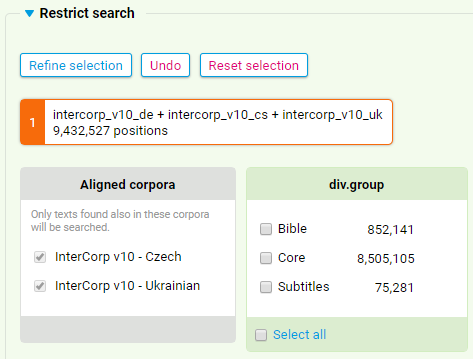 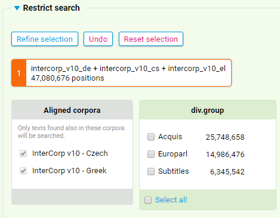
Die unterschiedliche Quantität und Zusammensetzung dieser Schnittmengen ist augenscheinlich: Für die Kombination Deutsch/Tschechisch/Ukrainisch können nur 9 432 527 Token durchsucht werden, die zu einem großen Teil jedoch aus den fiktionalen Textsorten des manuell überprüften Cores bestehen. Soll das InterCorp zum Vergleich des Deutschen mit dem Tschechischen und Griechischen genutzt werden, ist dies hingegen nur für die Rechtstexte aus dem Acquis Communautaire, die Verhandlungen des Europäischen Parlaments und Filmsubtitel – also nur für automatisch verarbeitete Korpusteile – möglich. Im Gegenzug ist das durchsuchbare Korpus mit 47 080 676 Wörtern deutlich umfangreicher.
Technische Aufbereitung und Modellierung: Methodische Aspekte
In den Schwerpunkten der technischen Aufbereitung und Modellierung der Texte – und dabei insbesondere der Core-Texte, die vom Institut des Tschechischen Nationalkorpus in Kooperation mit den SprachkoordinatorInnen selbst verarbeitet werden – ist eindeutig die linguistische Ausrichtung des Gesamtprojekts erkennbar: Ziel ist es, die Sprache der Texte linguistisch zu erschließen. In Abhängigkeit von der Verfügbarkeit entsprechender Tools für die einzelnen Sprachen werden die Texte daher lemmatisiert und/oder morphosyntaktisch annotiert.
Wenig berücksichtigt wird im Korpusdesign derzeit noch die Unterscheidung von übersetzten Texten und Originalen, wenngleich angenommen werden muss, dass es zwischen diesen Differenzen in Bezug auf die Komplexität etc. gibt. Für das Tschechische werden entsprechende Studien auch am Institut des Tschechischen Nationalkorpus anhand eines eigens erstellten Korpus (JEROME21) durchgeführt (vgl. Chlumská 2017). Rosen (2016: 37) identifiziert diesen Umstand auch als ein Desiderat für das InterCorp, möglichst alle Originale, zu denen Übersetzungen in einem oder in mehreren Sprachenpaaren im InterCorp vorliegen, ebenfalls zu inkludieren. Zumindest für Version 8 war dies noch nicht der Fall. Derzeit ist es im Suchinterface des Korpusmanagers KonText möglich, ein Subkorpus aus nur übersetzten Texte oder nur Originalen zu erstellen.
Alignierung der Bitexte
Der gesamte Verarbeitungsprozess der Texte im Core ist bei Rosen (2016: 35f.) sowie Rosen und Vavřín (2012: 2448f.) detailliert beschreiben, aber nicht Teil der Dokumentation im Wiki. Das Hauptaugenmerk in der technischen Aufbereitung der Texte liegt eindeutig auf der Alignierung der nicht-tschechischsprachigen mit den tschechischsprachigen Versionen auf Satzebene, für das natürlich eine Segmentierung in Sätze Voraussetzung ist. Zu diesem Zweck kommt ein Tool namens Punkt zum Einsatz (Kiss und Strunk 2006: 485–525). Die Alignierung wird in einem ersten Schritt automatisch mit dem Programm Hunalign 22 vorgenommen, in einem weiteren dann manuell im, vom Projekt selbst entwickelten Paralleltexteditor InterText 23 (Vondřička 2014) überprüft und korrigiert. Das InterCorp verwendet XML als das zentrale Datenformat.
Linguistische Annotationen und Community Standards
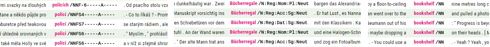
Aus dem opportunistischen Einsatz verschiedener Tools folgt jedoch auch, dass im InterCorp verschiedene, sprachspezifische Tagsets zum Einsatz kommen. Dieser Umstand muss bei der Erstellung komplexer Suchabfragen berücksichtigt werden, wobei gesammelte Informationen nicht im Wiki oder einer anderen Dokumentation des InterCorp selbst vorliegen, sondern den zum Rezensionszeitpunkt teilweise nicht funktionierenden Links auf der in Endnote 29 verlinkten Seite der Wiki-Dokumentation entnommen werden müssen. Abb. 6 zeigt beispielhaft drei Screenshots aus Suchabfragen aus dem tschechischen, deutschen und englischen Teil des InterCorp in der Version 10 (erstellt am 05. 03. 2018) mit Anzeige der morphosyntaktischen Tags, um den Grad der möglichen Abweichungen darzustellen. Es handelt sich um die Ergebnisse einer Suchabfrage nach dem Lemma des jeweiligen Äquivalents zu dt. Bücherregal (n.) (engl. bookshelf, tsch. police [f.]).
Am tschechischen Beispiel ist gut das positionelle Annotationssystem erkennbar, das sich in der tschechischen Korpuslinguistik als de facto-Standard etabliert hat (vgl. Hajič 2004), wohingegen für das Deutsche mit einer leicht adaptierten Version des Stuttgart-Tübingen-Tagsets (STTS, Schiller et al. 1999), ebenfalls einem etablierten community standard, gearbeitet wird. Für das Englische wird das Tagset der Penn Treebank 25 leicht modifiziert verwendet. Aus AnwenderInnenperspektive wäre in diesem Bereich eine zentrale Dokumentation, z. B. im Wiki hilfreich.
Textspezifische Metadaten
Die Anzahl der für einzelne Korpusteile vorhandenen Metadaten divergiert relativ stark. Gerade bei den von dritten Projekten akquirierten Collections sind teilweise nur minimale textbezogene Metadaten vorhanden, was wohl mit dem Aufbauprinzip der zugrundeliegenden Korpora (v. a. beim Acquis- und Europarl-Korpus) und/oder dem Prinzip ihrer Integration ins InterCorp zusammenhängt. Die Beschreibung der Größe des InterCorp in Version 10 im Wiki26 legt nahe, dass jede der Collections als ein einziges XML-Dokument in die Datenbank integriert wurde, im Core jedoch jedes einzelne Werk ein eigenes solches XML-Dokument bildet und damit jedes Dokument (doc) mit einem Abschnitt (div) übereinstimmt. Auf diese beiden Gliederungsebenen im Korpus beziehen sich jeweils die folgenden Metadaten, die sämtlich im Korpusmanager angezeigt oder für die Erstellung von Suchabfragen genutzt werden können.
| Metadaten bezogen auf das Dokument (doc) | Metadaten bezogen auf den Abschnitt (div) |
|---|---|
|
|
Nutzbarkeit, Zugänglichkeit und Archivierung
Das InterCorp ist wie die anderen Korpora des Tschechischen Nationalkorpus für nicht-kommerzielle Zwecke, unentgeltlich und nach Registrierung und Freischaltung des Nutzerkontos online im Korpusmanager KonText zugänglich. Eine sich auf diesen beziehende, englische Dokumentation ist im Wiki des Tschechischen Nationalkorpus abrufbar.27
Das Korpus ist aus urheberrechtlichen Gründen nicht in seiner Gesamtheit herunterladbar, sondern kann nur über diesen Korpusmanager durchsucht werden. Sollten für eine bestimmte Forschungsfrage oder z. B. für die Entwicklung von NLP-Anwendungen alignierte Texte und nicht nur Konkordanzen benötigt werden, können diese vom Institut nach Unterzeichnung eines nicht-kommerziellen Lizenzvertrags in bilingualen Dateien angefordert werden. Auch dabei werden aus Urheberrechtsgründen die Originaltexte in Einzelteile zu max. 100 Wörtern pro Sprache aufgebrochen. Die entsprechenden Informationen über dieses Vorgehen sind in der Online-Dokumentation nicht zugänglich, sondern Rosen (2016) entnommen.
Dokumentation
Das InterCorp ist gemeinsam mit den anderen Korpora des Tschechischen Nationalkorpus im unmittelbar von der Startseite http://www.korpus.cz/ abrufbaren Wiki des Projekts28 dokumentiert, das auf Tschechisch und – zumindest für die Beschreibungen der Korpora und einiger Applikationen – auf Englisch zur Verfügung steht. Die sich auf das gesamte InterCorp beziehende Seite29 ist zum Rezensionszeitpunkt mit dem Vermerk, dass es sich um eine alte Version des Dokuments handle, überschrieben, enthält jedoch übersichtlich zusammengestellt alle zentralen Informationen zu Zielen und Nutzbarkeit, Größe und Aufbau des Korpus sowie zur Förderung des Projekts, den an ihm beteiligten Institutionen und die Namen der Kontaktpersonen. Auch die konkreten Änderungen zwischen den veröffentlichten Versionen sind dokumentiert. Richtlinien zur Zitation werden hervorgehoben angegeben.
Die als weiterführender Link angegebene, sogenannte „ursprüngliche“ Seite des Projekts30 verweist an zahlreichen Stellen wieder zurück auf das aktuellere Wiki und erweist sich somit als keine substantiellen, aktualisierenden Informationen bringend. Dies gilt für die englischen wie tschechischen Versionen im gleichen Ausmaß. Im Allgemeinen wird der Anschein erweckt, dass sich die Dokumentation des InterCorp gerade im Umbau befindet, wodurch die Bereitstellung der maßgeblichen Grundinformationen jedoch nicht beeinträchtigt ist. Lücken in der intuitiv im Wiki abrufbaren Dokumentation betreffen die exakte Beschreibung der Textauswahlkriterien sowie bestimmte technisch-methodische Aspekte, auf die in den entsprechenden Kapiteln dieser Rezension näher eingegangen wird. Sie sind in Einzelpublikationen detailliert erläutert (Čermák und Rosen 2012; Rosen und Vavřín 2012; Rosen 2016).
Der Online-Korpusmanager KonText
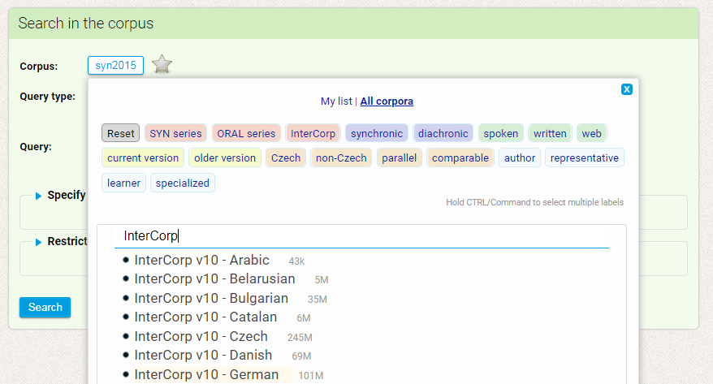
Beim Abruf des Korpusmanagers über den Link https://kontext.korpus.cz/ (letzter Zugriff: 08. 03. 2018) ist prinzipiell das repräsentative (balancierte) tschechische Referenzkorpus SYN201532 als zu durchsuchendes Korpus eingestellt. Abb. 7 zeigt das Suchmenü, über das nach Klick auf den Titel des Korpus (hier: syn2015) das gewünschte Korpus ‒ z. B. die deutschsprachige Version des InterCorp ‒ gesucht und ausgewählt werden kann.33 Die Größe des Korpus wird neben dem Titel schon in dieser Ansicht angezeigt. Angemeldete NutzerInnen können einzelne, häufig durchsuchte Korpora als Favoriten markieren, um einfacher auf sie Zugriff zu haben.
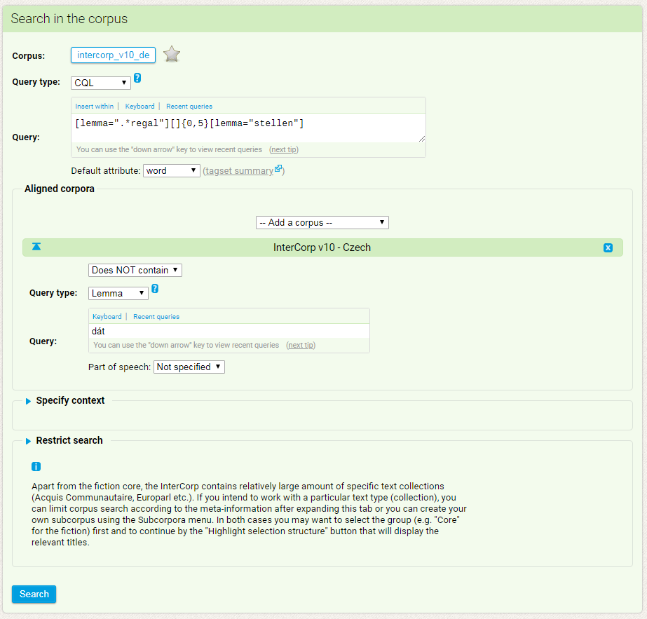
Die Suchanfragen in den beiden Sprachen können aufeinander bezogen werden, wie etwa im abgebildeten Beispiel, das nach Konkordanzen sucht, in deren deutscher Version das Lemma stellen im Abstand von null bis fünf Wörtern auf ein auf -regal endendes Lemma folgt, deren tschechische Version jedoch das Lemma (hier kommt nur die Suchfunktion „Lemma“ zum Einsatz) dát ‚geben‘ NICHT enthält.
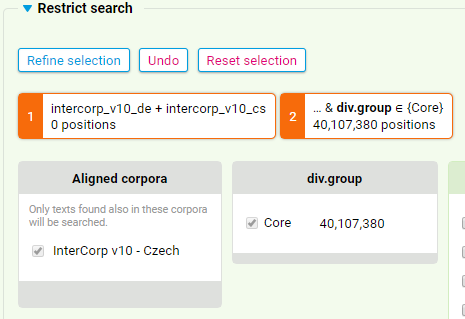
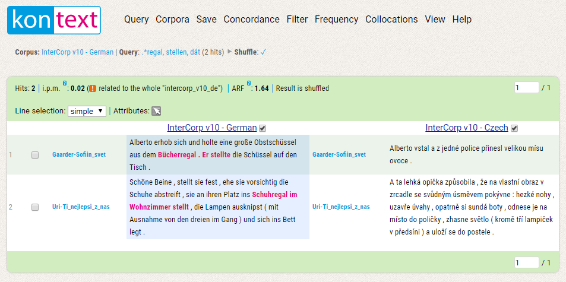
Für das InterCorp ist standardisiert die durch den geteilten Bildschirm übersichtlichere satzweise Anzeige eingestellt. Unter dem Menüpunkt „View“ kann jedoch einfach auch auf die KWIC-Ansicht umgestellt werden. Auch eine weitergehende Personalisierung bzw. Adaption der Anzeige ist unter diesem Punkt möglich: Die Größe des angezeigten Kontexts kann ebenso verändert werden, wie die Anzahl der maximal auf einer Seite angezeigten Konkordanzen („general settings“). Außerdem ist es möglich, bestimmte Metadaten und die morphosyntaktischen Annotationen anzeigen zu lassen („corpus-specific settings“). Auch die Menüpunkte „Concordance“ und „Filter“ bieten Anzeigeoptionen im weitesten Sinn, da sie erlauben, festzulegen, ob bzw. nach welchem Muster die Konkordanzen angezeigt werden sollen.
Zentrale korpuslinguistische Analysemethoden sind über die Menüpuntke „Frequency“ und „Collocations“ abrufbar. Unter „Save“ können entweder alle oder ausgewählte Konkordanzen als .csv-, .xlsx-, .xml- oder .txt-file heruntergeladen werden, was eine einfache Weiterverarbeitung dieser Daten für verschiedene Forschungszwecke und auch für Personen mit unterschiedlichen technischen Anforderungen ermöglicht. Visualisierungen, wie sie etwa für die tschechischsprachigen Korpora durch Tools wie SyD,35 mit dem morphologische Varianten in verschiedenen tschechischen Korpora des tschechischen Nationalkorpus verglichen werden können, möglich sind, gibt es für das InterCorp nicht.
Andere Auswertungsmöglichkeiten und Anwendungen
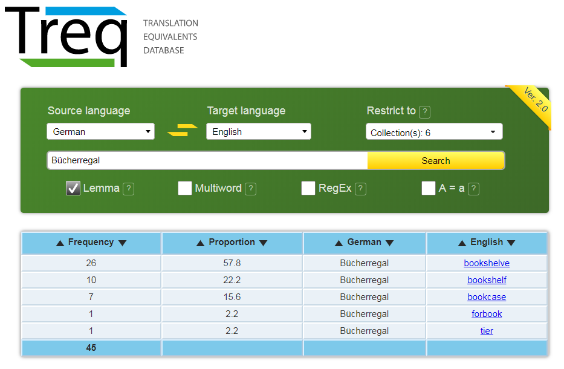
Die Frequenzanalysen, die die Anwendung auf diesen ersten Blick bietet, sind sehr beschränkt: Es wird nur die absolute Frequenz sowie der prozentuelle Anteil eines bestimmten Äquivalents relativ zu dieser absoluten Frequenz angegeben. Rückschlüsse auf die Größe des zugrunde liegenden Korpus können von dieser Ansicht nicht gezogen werden. Durch Klick auf ein entsprechendes, blau unterlegtes Äquivalent gelangt man jedoch zu den entsprechenden Konkordanzen, die im KonText angezeigt werden, in dem auch weitere Analysen möglich sind.
Treq weist also ähnliche Funktionen auf wie Plattformen wie Linguee 37, ist jedoch für linguistische Untersuchungen als Quelle insofern deutlich besser geeignet, als die Zusammensetzung und Größe des zugrundeliegenden Korpus bekannt ist und standardisierte Metadaten zu den Konkordanzen vorliegen. Ein detaillierter Vergleich der beiden Systeme für die praktische Übersetzung bzw. in ihren Funktionen als korpusbasiertes, elektronisches Wörterbuch, steht bislang aus.
Archivierung und Weiterverwendung
Das InterCorp ist aktuell nicht wie manche andere Korpora des Tschechischen Nationalkorpus im Language Resource Inventory von CLARIN38 gelistet und auch der Online-Dokumentation des InterCorp oder der sich auf es beziehenden Forschungsliteratur (Čermák und Rosen 2012; Rosen 2012; Rosen und Vavřín 2012) kann keine Information zur Langzeitachrivierung der Metadaten oder des Korpus entnommen werden. Gleichzeitig kann jedoch durch die Langzeitfinanzierung des gesamten Instituts des tschechischen Nationalkorpus und die zentrale Verankerung der Korpus- und Computerlinguistik in der tschechischen wissenschaftlichen Landschaft davon ausgegangen werden, dass das InterCorp langfristig zur Verfügung stehen und auch weiter ausgebaut und optimiert werden wird.
Schlussfolgerungen
Abschließend kann ein durchwegs positives Fazit gezogen werden: Das InterCorp hebt sich von anderen Parallelkorpora in mehreren Punkten ab, durch die eine besonders hohe Usabilitiy insbesondere für Forschende, Studierende und auch ÜbersetzerInnen erreicht werden kann. Eine zentrale Rolle nimmt dabei mit Sicherheit die institutionelle Verankerung des Projekts ein. Am Institut des Tschechischen Nationalkorpus wird das InterCorp in enger Kooperation von Forschenden, Lehrenden und TechnikerInnen entwickelt – eine Tatsache, die sich sowohl im Aufbau und Inhalt des Korpus als auch seiner technischen Umsetzung zeigt:
Hinsichtlich des Aufbaus und Inhalts des InterCorp muss sein Umfang sowohl in Bezug auf die Sprachen als auch die Texttypen, die es enthält, hervorgehoben werden. Das Korpus geht den schmalen Grat zwischen Quantität und Qualität, die der Anspruch, ein Parallelkorpus mit Texten aus 40 Sprachen für menschliche Nutzung in den Bereichen Linguistik, Sprachdidaktik und Translation zu erstellen, mit sich bringt, überzeugend: Einerseits werden primär belletristische Quellen vom Projekt und seinen Partnerinstitutionen zusammengestellt und manuell aligniert, um hohe Qualität zu garantieren. Andererseits werden gleichzeitig maschinell verarbeitete Bitexte aus anderen Korpusprojekten integriert, wodurch die Quantität, sprich der Umfang an Texten aber auch an verschiedenen Textsorten und Sprachen, erhöht wird.
An der technischen Umsetzung überzeugt auf den ersten Blick der Online-Korpusmanager KonText. Er ist nicht nur nutzerfreundlich aufgebaut, sondern bietet auch ein umfangreiches Repertoire an Filter-, Anzeige- und Analysemöglichkeiten, die die Arbeit mit dem Korpus unterstützen. Dahinter steht offensichtlich nicht nur umfangreiche Entwicklungsarbeit am Institut des Tschechischen Nationalkorpus sondern auch die Nutzung zahlreicher, oft sprachenspezifisch gewählter Tools wie Lemmatizer oder POS-Tagger, durch die große Teile des InterCorp auch unabhängig von der Pivotsprache Tschechisch für komplexe Suchanfragen nutzbar gemacht werden können.
Aktuell können in Bezug auf das InterCorp einige Lücken in der Dokumentation ausgemacht werden. Zwar enthalt das Wiki des Tschechischen Nationalkorpus die zentralen Eckdaten zum Aufbau und Inhalt des Korpus auf Tschechisch und Englisch, doch erfordert es z. B. intensive Recherche, sich mit den diversen, für die Einzelsprachen verwendeten Tagsets vertraut zu machen. Auch Details zum technischen Framework, also etwa dem Datenmodell oder den verwendeten Dateiformaten sind nur den begleitend erscheinenden wissenschaftlichen Artikeln entnehmbar, auf die allerdings prominent verwiesen wird. Informationen zur Archivierung und langfristigen Zugänglichkeit fehlen gänzlich.
Ein Schließen dieser Lücken würde es potentiellen, auch internationalen NutzerInnen erlauben, die Eignung des InterCorp für ihre Forschungszwecke noch besser zu evaluieren. Außerdem könnte dadurch sowie etwa durch eine Listung im CLARIN-Inventory die Sichtbarkeit dieses Parallelkorpus außerhalb der Bohemistik und der slawischsprachigen korpuslinguistischen Öffentlichkeit, innerhalb derer es sich eines hohen Bekanntheitsgrads erfreut, erhöht werden. Wie oben gezeigt, kann das Korpus nämlich nicht nur für Forschungsfragen, die sich unmittelbar auf das Tschechische beziehen, als wertvolle Quelle dienen. Dies ist einerseits der Fall, weil es für bestimmte Sprachen oder Sprachenpaare kaum entsprechend einfach und auch auf Englisch zugängliche Korpora gibt, und andererseits auch auf Grund der z. B. für Studierende und Personen ohne große korpuslinguistische Erfahrung gegebenen Zugänglichkeit über den strukturiert und intuitiv aufgebauten Korpusmanager KonText bzw. der ebenfalls auf dem InterCorp basierenden Anwendung TREQ.
Bibliography
- Čermák, František und Alexandr Rosen. 2012. “The case of InterCorp, a multilingual parallel corpus.” International Journal of Corpus Linguistics 17 (3): 411–427.
- Chlumská, Lucie. 2017. Překladová čeština a její charakteristiky. Praha: Nakladatelství Lidové noviny.
- Hajič, Jan. 2004. Disambiguation of Rich Inflection (Computational Morphology of Czech). Praha: Karolinum.
- Káňa, Tomáš. 2014. Sprachkorpora in Unterricht und Forschung DaF/DaZ. Brno: Masarykova univerzita.
- Kiss, Tibor und Jan Strunk. 2006. Unsupervised multilingual sentence boundary detection. Computational Linguistics, 32(4), 485–525.
- Koehn, Philipp. 2005. “Europarl: A Parallel Corpus for Statistical Machine Translation.” MT Summit 2005. Letzter Zugriff: 03. 03. 2018. http://www.mt-archive.info/MTS-2005-Koehn.pdf.
- Rosen, Alexandr. 2012. “InterCorp – a look behind the façade of a parallel corpus.” In: Ewa Gruszczyńska und Agnieszka Leńko-Szymańska. Polskojęzyczne korpusy równoległe. Polish-language Parallel Corpora. Warsawa: Instytut Lingwistyki Stosowanej, 21–40.
- Rosen, Alexandr und Martin Vavřín. 2012. “Building a multilingual parallel corpus for human users.” In: Nicoletta Calzolari, Khalid Choukri, Thierry Declerck, Mehmet Uğur Doğan, Bente Maegaard, Joseph Mariani, Asuncion Moreno, Jan Odijk, Stelios Piperidis (eds.): Proceedings of the Eight International Conference on Language Resources and Evaluation (LREC 2012). Istanbul: European Language Resources Association (ELRA), 2447–2452.
- Schiller, A., Teufel, S., Stöckert, C. und Thielen, C. 1999. Guidelines für das Tagging deutscher Textcorpora mit STTS. Technischer Bericht, Universitäten Stuttgart und Tübingen.
- Steinberger, Ralf, Mohamed Ebrahim, Alexandros Poulis, Manuel Carrasco-Benitez, Patrick Schlüter, Marek Przybyszewski und Signe Gilbro. 2014. “An overview of the European Union’s highly multilingual parallel corpora.” Language Resources and Evaluation 48: 679–707. https://doi.org/10.1007/s10579-014-9277-0.
- Škrabal, Michal und Martin Vavřín. 2017. Databáze překladových ekvivalentů Treq. Časopis pro moderní filologii 99 (2), 245–260.
- Vondřička, Pavel. 2014. Aligning parallel texts with InterText. In: Calzolari, N. et al. (ed.): Proceedings of the Ninth International Conference on Language Resources and Evaluation (LREC'14). European Language Resources Association (ELRA): 1875-1879.
Notes
- https://web.archive.org/web/20180930072009/https://ucnk.ff.cuni.cz/en/. ↑
- Vgl. https://web.archive.org/web/20180930072202/http://utkl.ff.cuni.cz/en/index.php. ↑
- Vgl. https://web.archive.org/web/20180930072239/https://kontext.korpus.cz/first_form. ↑
- Vgl. https://web.archive.org/web/20180930072318/http://treq.korpus.cz/. ↑
- Vgl. https://web.archive.org/web/20180930072433/http://opus.nlpl.eu/. ↑
- Vgl. https://ec.europa.eu/jrc/en/language-technologies/jrc-acquis (letzter Zugriff: 08. 03. 2018). ↑
- 2005–2011: The Czech National Corpus and Corpora of Other Languages (0021620823), 2012–2015: Czech National Corpus (LM2011023), 2016–2019: Czech National Corpus (LM2015044). Detaillierte Informationen zu diesem Projekt, die auch Auskunft über die Höhe der Förderungen geben, finden sich unter https://www.rvvi.cz/cep?s=jednoduche-vyhledavani&ss=detail&n=0&h=LM2015044 (letzter Zugriff: 03. 03. 2018). ↑
- Vgl. die Auflistung auf https://web.archive.org/web/20180301203839/http://wiki.korpus.cz/doku.php/en:cnk:intercorp#coordinators_for_specific_languages. ↑
- Inkl. Tschechisch, das auf den Seiten des Tschechischen Nationalkorpus üblicherweise nicht zu den vorhandenen Sprachen gezählt wird. ↑
- Diese Größe ergibt sich aus der Summe der unter https://web.archive.org/web/20180303214506/https://wiki.korpus.cz/doku.php/en:cnk:intercorp:verze10 angegebenen Korpusgröße der tschechischsprachigen wie nicht-tschechischsprachigen Teile. ↑
- https://web.archive.org/web/20180303193412/http://ucnk.korpus.cz/intercorp/?lang=en. ↑
- Bei Project Syndicate handelt es sich um ein Medienunternehmen mit Sitz in der Tschechischen Republik, das journalistische Meinungsartikel auf Englisch erstellt und laut eigener Aussage in 12 verschiedene Sprachen, nämlich Arabisch, Bahasa, Tschechisch, Niederländisch, Französisch, Deutsch, Hindi, Italienisch, Mandarin, Portugiesisch, Russisch und Spranisch übersetzt (vgl. https://web.archive.org/web/20180303205213/https://www.project-syndicate.org/about). ↑
- Ähnlich ist VoxEurope eine Nachrichten- und Diskussionswebsite mit Basis in Frankreich, die sich mit europäischen Themen auseinandersetzt und seine Inhalte in 10 europäische Sprachen – Tschechisch, Deutsch, Englisch, Spanisch, Französisch, Italienisch, Niederländisch, Polnisch, Portugiesisch und Rumänisch – übersetzt (vgl. https://web.archive.org/web/20180303210343/http://www.voxeurop.eu/de/about). ↑
- Vgl. https://web.archive.org/web/20180303210916/https://ec.europa.eu/jrc/en/language-technologies/jrc-acquis sowie Steinberger et al. (2014). ↑
- Vgl. https://web.archive.org/web/20180303211410/http://www.statmt.org/europarl/ sowie Koehn (2005). ↑
- Vgl. https://web.archive.org/web/20180930072919/https://www.opensubtitles.org/de. ↑
- Vgl. die Angaben zur Größe der einzelnen Korpusteile für jede der Sprachen auf https://web.archive.org/web/20180303214506/https://wiki.korpus.cz/doku.php/en:cnk:intercorp:verze10#corpus_size_in_thousands_of_words. ↑
- Čermák und Rosen (2012: 415) definieren nicht näher, was sie unter einer „nicht-trivialen Grundmenge an Titeln“ verstehen. Möglich ist, dass in der Konzeptionsphase des Projekts die Annahme bestand, dass es eine ausreichende Menge an kanonischen Titeln der Weltliteratur des 20. Jahrhunderts gäbe, die in (fast) alle der im InterCorp enthaltenen Sprachen übersetzt seien. Zumindest in dem erwarteten Ausmaß dürfte sich diese nicht bewahrheitet haben. ↑
- Vgl. die Angaben zur Größe der einzelnen Korpusteile für jede der Sprachen auf https://web.archive.org/web/20180303214506/https://wiki.korpus.cz/doku.php/en:cnk:intercorp:verze10#corpus_size_in_thousands_of_words. ↑
- Es handelt sich um Screenshots aus dem Suchanfragenmenü des Korpusmanagers KonText (https://web.archive.org/web/20180930072239/https://kontext.korpus.cz/first_form), in dem auch die Einschränkung des zu durchsuchenden Korpus nach diversen Metadaten möglich ist. Erstellt wurden sie am 05.03.2018. ↑
- Vgl. https://web.archive.org/web/20180305202555/http://wiki.korpus.cz/doku.php/en:cnk:jerome. ↑
- Vgl. https://web.archive.org/web/20180930073237/http://mokk.bme.hu/en/resources/hunalign/. ↑
- Vgl. https://web.archive.org/web/20180930073325/http://wanthalf.saga.cz/intertext. Der Editor ist spezifisch für das InterCorp entwickelt worden, nachdem in einer Frühphase auf proprietäre Programme wie ParaConc (vgl. http://www.paraconc.com/ [letzter Zugriff: 05. 03. 2018]) zurückgegriffen worden sein dürfte. Der Code des Editors ist auf GitHub erhältlich. ↑
- Vgl. https://web.archive.org/web/20180303214506/https://wiki.korpus.cz/doku.php/en:cnk:intercorp:verze10#morphosyntactic_annotation. ↑
- Vgl. https://web.archive.org/web/20180930073512/https://www.ling.upenn.edu/courses/Fall_2003/ling001/penn_treebank_pos.html. ↑
- Vgl. https://web.archive.org/web/20180303214506/https://wiki.korpus.cz/doku.php/en:cnk:intercorp:verze10. ↑
- Vgl. https://web.archive.org/web/20180930073610/https://wiki.korpus.cz/doku.php/en:manualy:kontext:index. ↑
- https://web.archive.org/web/20180930073653/http://wiki.korpus.cz/doku.php/en:start. ↑
- https://web.archive.org/web/20180303191928/https://wiki.korpus.cz/doku.php/en:cnk:intercorp. ↑
- https://web.archive.org/web/20180303193412/http://ucnk.korpus.cz/intercorp/?lang=en. ↑
- Eine detaillierte deutschsprachige Anleitung zur Verwendung des Korpusmanagers KonText findet sich in Káňa (2014: 81–104). ↑
- Vgl. https://web.archive.org/web/20180307140237/https://wiki.korpus.cz/doku.php/en:cnk:syn2015. ↑
- Die in Abb. 7, 8, 9 und 10 gezeigten Screenshots wurden am 07. 03. 2018 von der Verfasserin erstellt. ↑
- Vgl. https://web.archive.org/web/20180930073843/https://www.sketchengine.eu/documentation/corpus-querying/. ↑
- Vgl. https://syd.korpus.cz/ (letzter Zugriff: 09. 03. 2018). ↑
- TREQ ist zugänglich über: https://web.archive.org/web/20180930074010/http://treq.korpus.cz/, die Dokumentation unter: https://web.archive.org/web/20180306155552/https://wiki.korpus.cz/doku.php/en:manualy:treq sowie in Škrabal und Vavřín 2017. ↑
- Vgl. https://www.linguee.de/ (letzter Zugriff: 07. 03. 2018). ↑
- Vgl. https://web.archive.org/web/20180930074120/https://lindat.mff.cuni.cz/en/. ↑
@article{intercorp,
author = {Kim, Agnes},
title = {Rezension von „InterCorp – Ein mehrsprachiges Parallelkorpus des Tschechischen
Nationalkorpus“ (Český národní korpus)},
journal = {RIDE – A review journal for digital editions and resources},
number = {9},
year = {2018},
doi = {10.18716/ride.a.9.1},
url = {https://doi.org/10.18716/ride.a.9.1},
}TY - JOUR
AU - Kim, Agnes
TI - Rezension von „InterCorp – Ein mehrsprachiges Parallelkorpus des Tschechischen
Nationalkorpus“ (Český národní korpus)
T2 - RIDE – A review journal for digital editions and resources
IS - 9
PY - 2018
DA - 2018/11
DO - 10.18716/ride.a.9.1
UR - https://doi.org/10.18716/ride.a.9.1
PB - Institut für Dokumentologie und Editorik e. V.
LA - de
ER - Kim, A. (2018). Rezension von „InterCorp – Ein mehrsprachiges Parallelkorpus des Tschechischen
Nationalkorpus“ (Český národní korpus). RIDE – A review journal for digital editions and resources, (9). https://doi.org/10.18716/ride.a.9.1Kim, Agnes. "Rezension von „InterCorp – Ein mehrsprachiges Parallelkorpus des Tschechischen
Nationalkorpus“ (Český národní korpus)." RIDE – A review journal for digital editions and resources, no. 9, 2018. https://doi.org/10.18716/ride.a.9.1.Kim, Agnes. "Rezension von „InterCorp – Ein mehrsprachiges Parallelkorpus des Tschechischen
Nationalkorpus“ (Český národní korpus)." RIDE – A review journal for digital editions and resources, no. 9 (2018). https://doi.org/10.18716/ride.a.9.1.